Lab*502 nació como un laboratorio fotográfico y editorial en Iquique, con una inquietud que iba más allá de ofrecer servicios fotográficos: acercar las experiencias artísticas, recuperar los oficios análogos y generar nuevos espacios de exploración cultural en el norte del país.
El desafío fue encontrar una identidad capaz de representar esa ambición y, al mismo tiempo, darle estructura a una propuesta que reunía distintas disciplinas y oportunidades de negocio.
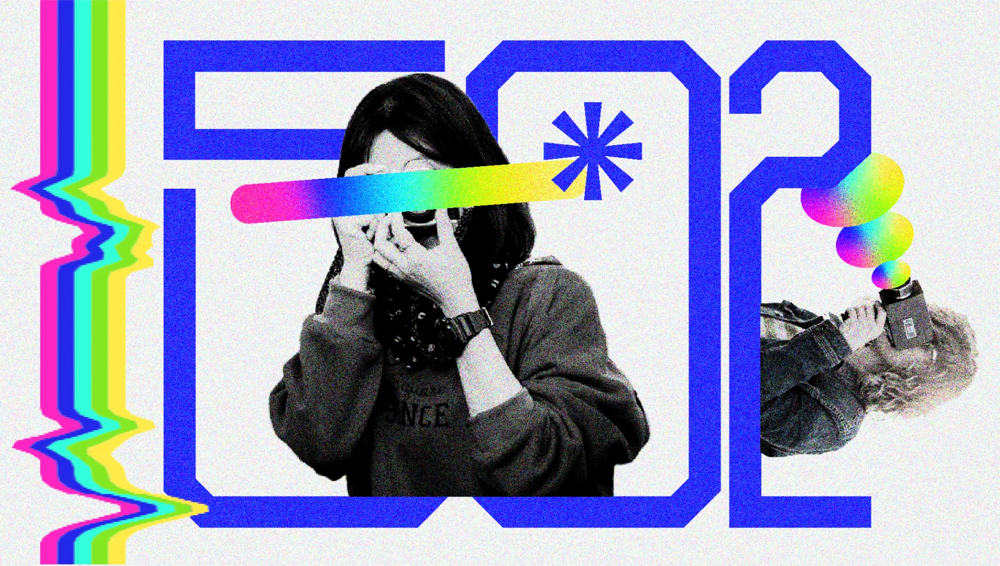
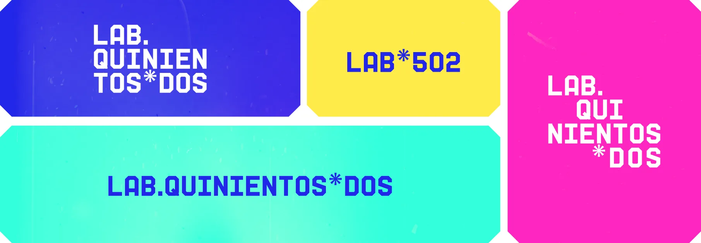
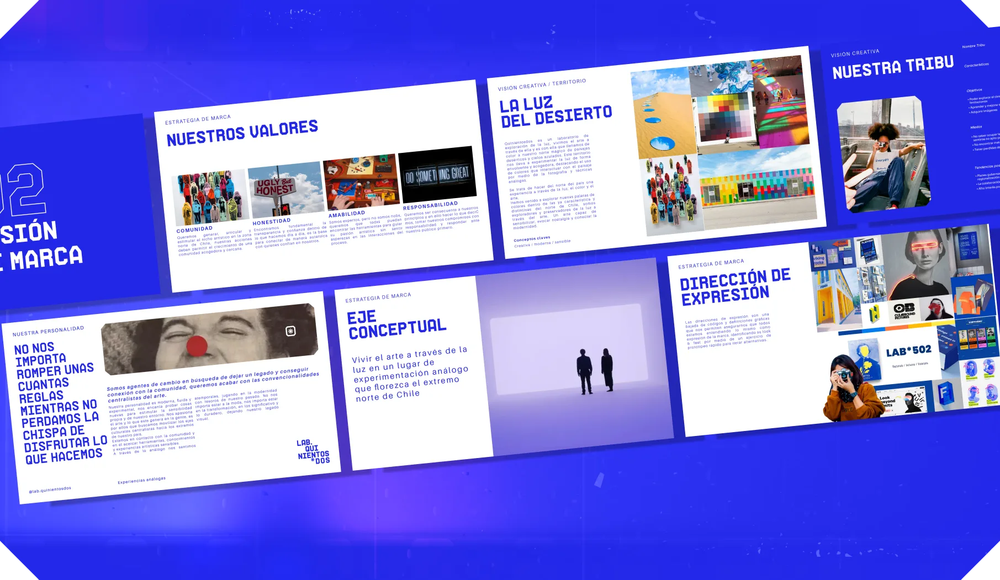
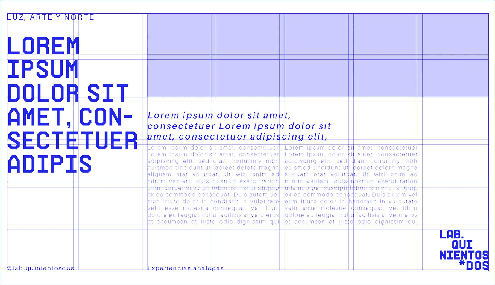
El proceso comenzó por entender qué quería construir Lab*502, a quiénes buscaba convocar y qué lugar podía ocupar dentro de su entorno. A partir de ese trabajo definimos un posicionamiento que conectaba fotografía, experimentación, comunidad y territorio.
Uno de los pasos importantes fue organizar su propuesta comercial en distintas líneas de servicio: fotografía corporativa, editorial e imprenta, talleres y encuentros, y restauración fotográfica. Esta arquitectura permitió dar mayor claridad a su oferta y construir una marca capaz de representar todas estas actividades sin perder coherencia.
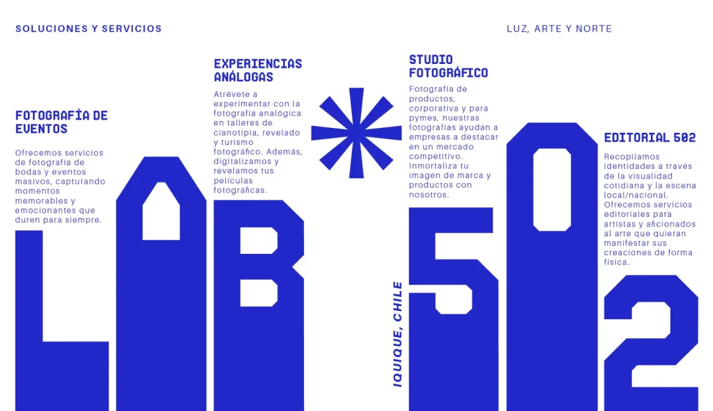
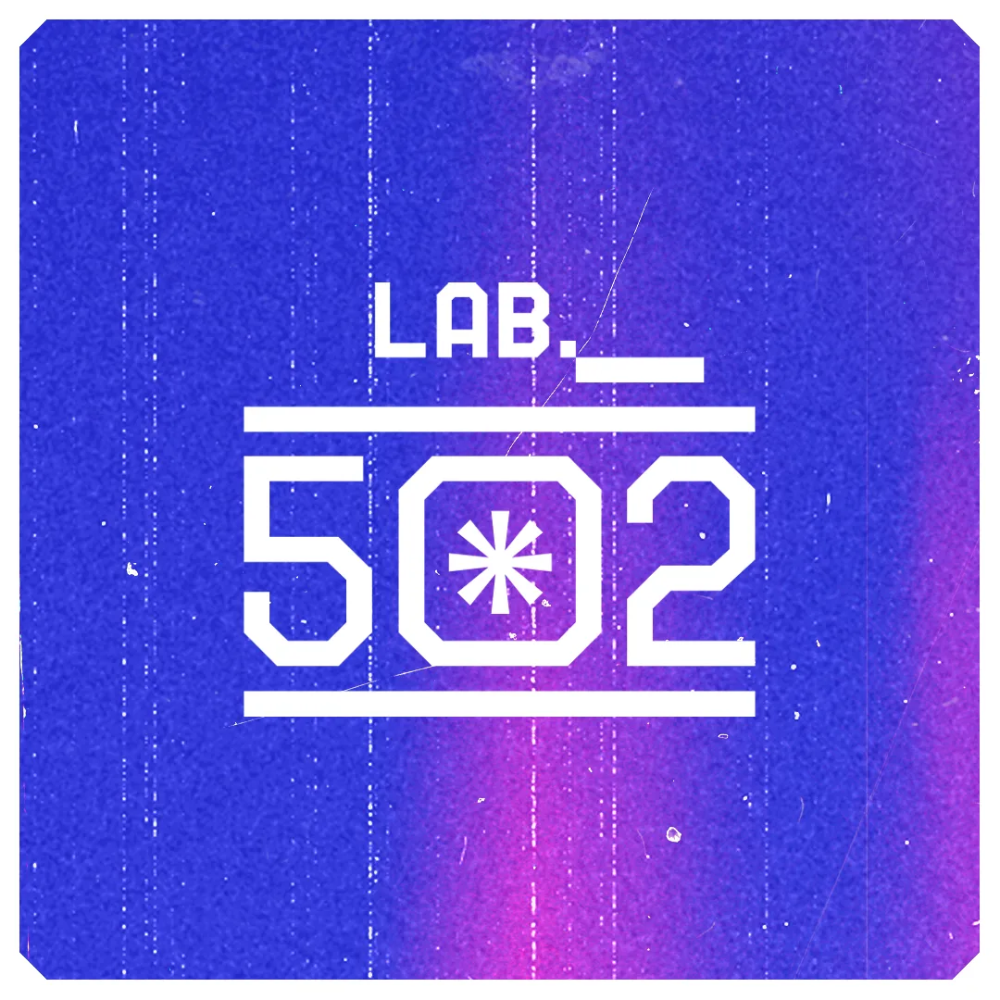
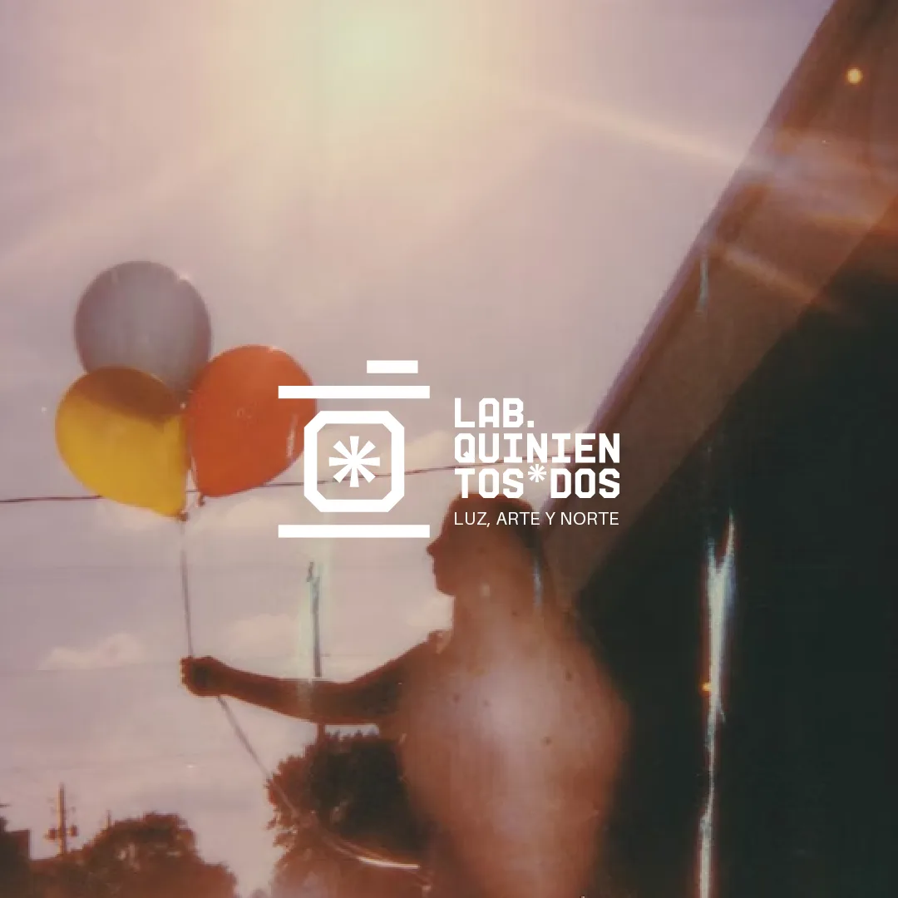
La dirección creativa tomó como punto de partida la luz del desierto. Una idea que conectaba la fotografía con el paisaje del norte, sus colores y su sensibilidad artística. Desde ahí desarrollamos un lenguaje visual experimental, contemporáneo y rupturista, que se alejara de los códigos tradicionales de los laboratorios fotográficos.
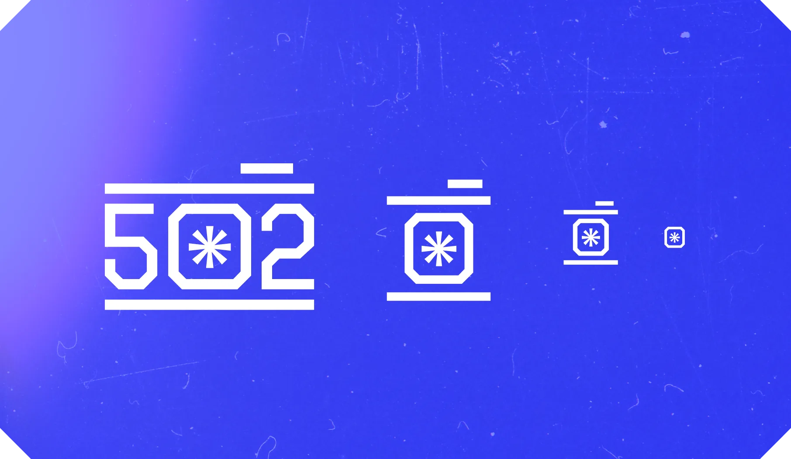
El resultado fue un sistema de identidad flexible, construido alrededor del número 502 y un símbolo inspirado en la captura de la luz. Una identidad que podía desplegarse en distintos formatos, desde sus aplicaciones editoriales y comunicación digital hasta sus espacios físicos y experiencias.
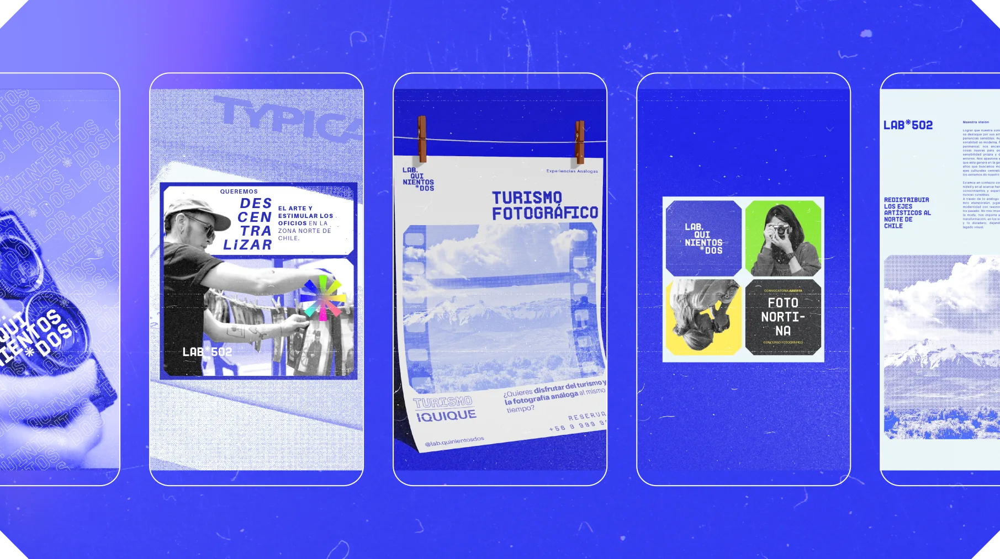
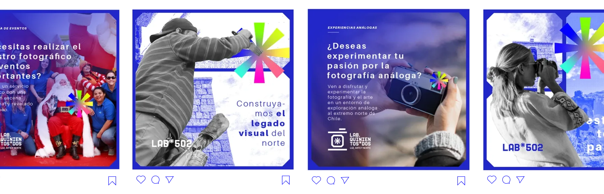
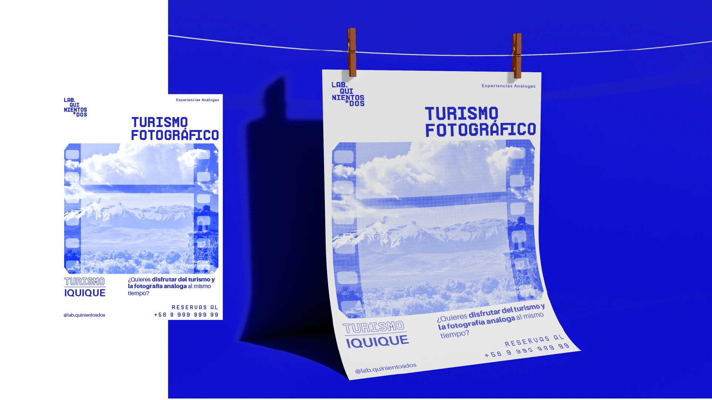
Más que construir una identidad visual, el proyecto buscó darle forma a una propuesta cultural: una marca que invitara a explorar, aprender y vivir el arte desde el norte de Chile.
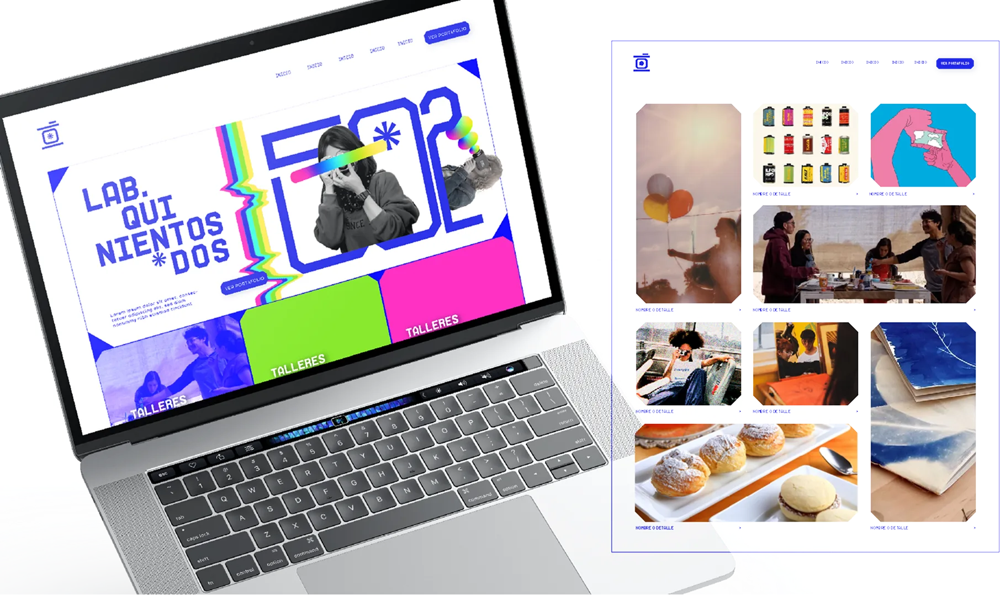
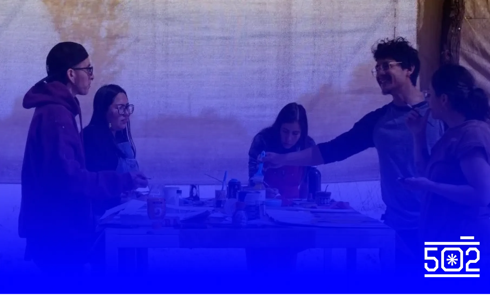